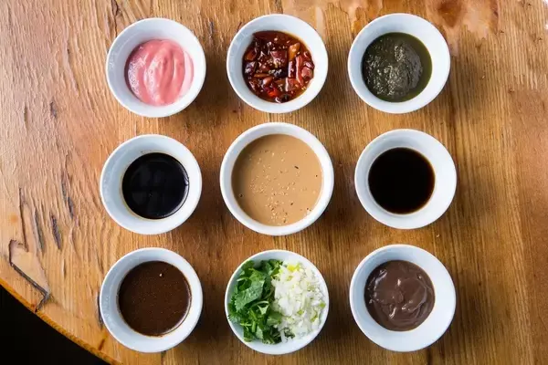

Welcome! Hello, I'm Eric, currently a third year student studying at Northeastern University under Khoury College of Computer Sciences. I am pursuing a Bachelors in Data Science and Business Administration with a concentration in Fintech. I grew up in Quincy, Massachusetts, which is about a thirty minute drive south from the university. Some of my hobbies include listening to music, playing video games, sleeping, and exploring mother nature. My goal after I graduate is to hopefully find a job that aligns with my interests and live a stable life.
Hot pot stands out as a culinary delight of exceptional merit. Hot pot is renowned for it's
that leave people satisfied after stuffing themselves to their hearts content. Hot pot offers a diverse selection of ingredients, allowing for a customizable and interactive dining experience. In addition to meats and vegetables, condiments, dipping sauces, and side dishes complement the meal. Sharing a hot pot meal is a popular way for friends and family to bond over a leisurely and flavorful meal. While hot pot has its roots in Chinese cuisine, variations of this cooking style can be found in other Asian countries, each with its unique twists and flavors. It has become a global favorite, with hot pot restaurants found in many parts of the world!
All in all, this is a brief introduction to the world of hot pot. If you haven't already, do try to gather some friends or family and have a relaxing time eating hot pot. Here are some restaurants located in Boston if you are interested! Enjoy and hope you all have an amazing experience!